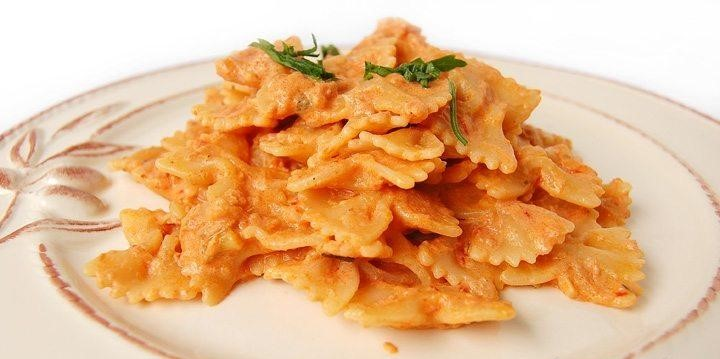

Pasta Panna e Tonno

Descrizione
La pasta panna e tonno con pomodoro è una ricetta semplice e molto saporita… anche per una pasta al volo con degli ospiti… infatti la pasta al tonno con l’aggiunta di panna ha un sapore molto delicato, ricorda un po’ la pasta al salmone… per un successo garantito!!!
Ingredienti
- gr di pasta formato farfalle
- 1 scatoletta piccola (80 gr) di tonno
- 100 ml di passata di pomodoro
- 1/2 confezione di panna da cucina
- 1/2 cipolla
- 1 spicchio d’aglio
- prezzemolo>
- olio
- sale
- peperoncino
- timo (opzionale)
Preparazione
- Preparare la cipolla, l’aglio, il prezzemolo ed il peperoncino su un tagliere
- Preparare un battuto con tali ingredienti
- Mettere il battuto in padella con l’olio a soffriggere
- Aggiungere il tonno sgocciolato e sbriciolato
- Far cuocere il tonno pochi minuti amalgamandolo al soffritto
- A questo punto aggiungere il pomodoro passato e regolare di sale
- Far cuocere a fuoco lento fino a che il pomodoro non si è ritirato
- Preparare un battuto con tali ingredienti
- Nel frattempo mettere a cuocere la pasta in abbondante acqua salata; a fine cottura pasta aggiungere la panna al sugo di tonno e far amalgamare
- Scolare la pasta al dente e versarla nella padella con il sugo di tonno e panna
- Saltare la pasta in modo da farla insaporire…
- Impiattare e servire cospargendo con prezzemolo tritato… e buon appetito!